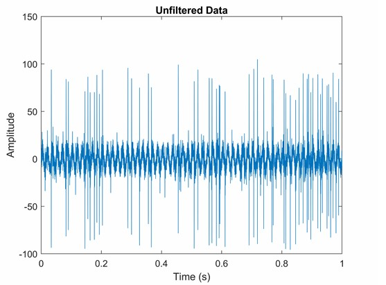
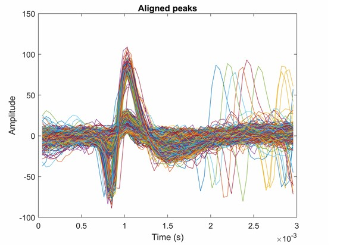
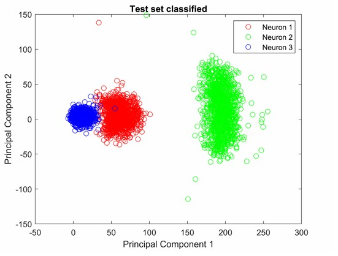
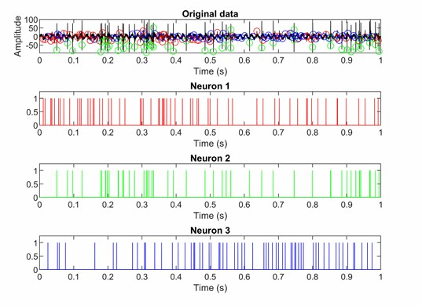
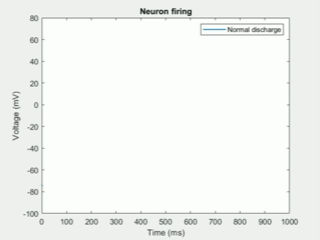
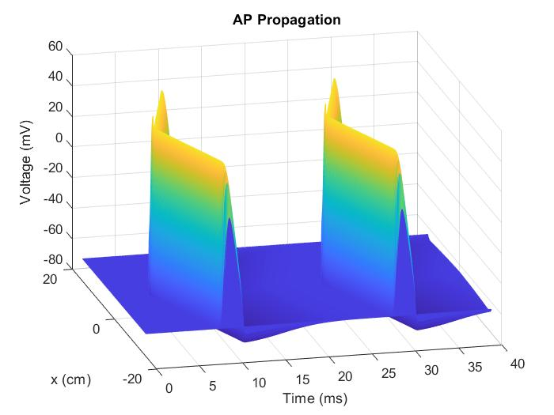
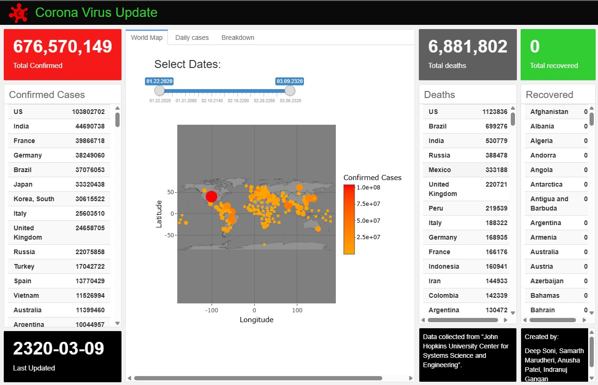
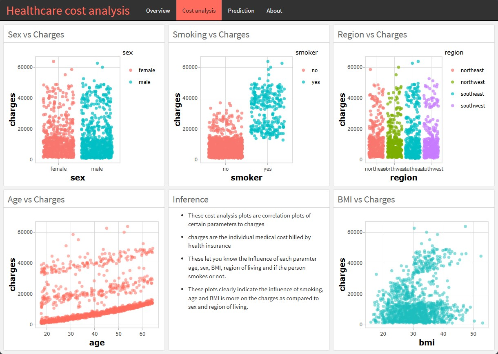

Projects
Neural Spike Sorting & Classification | MATLAB, Signal Processing, PCA, k-means, kNN
Built an end-to-end spike sorting pipeline for extracellular neural data, from detection to neuron-level firing reconstructions.




- Developed a complete spike sorting workflow including filtering, NEO-based spike detection, and waveform alignment.
- Applied PCA to reduce spike waveform dimensions for cluster separation.
- Used k-means clustering and kNN classification to identify and label distinct neuronal units.
- Reconstructed neuron-specific firing patterns over time from classified spikes.
- Created visualizations for spike cluster boundaries, waveform templates, and temporal firing rate dynamics.
Analysis of Vagus Nerve Stimulation (VNS) System for Epilepsy Treatment | MATLAB
Modeled neurostimulation mechanisms and evaluated VNS parameters for seizure control using biophysical simulations.


- Built biophysically grounded neuron models using Hodgkin-Huxley dynamics to simulate seizure-induced hyperexcitability.
- Modeled axonal activation under VNS using the Rattay cable model framework, generating spatiotemporal voltage surfaces along axons.
- Simulated stimulus-evoked neural activation patterns under VNS parameters (frequency, pulse width, amplitude).
- Conducted engineering analysis of VNS neuromodulation systems including stimulation algorithms, electrode�nerve interface engineering, and signal-driven closed-loop control designs.
- Visualized firing behaviors under pathological vs. VNS-controlled conditions.
pyAutomagic - EEG Preprocessing Package | Python, Git, BIDS, Software Engineering, EEG
Developed an EEG preprocessing toolkit in python with reproducible pipelines and QC tooling.
- Led a team of 6 students to develop an EEG preprocessing library inspired by the MATLAB Automagic toolbox.
- Built Python scripts to read raw EEG data, implement preprocessing algorithms (filters, ICA, bad-channel detection), and write results in BIDS format.
- Developed demonstration notebooks showing full preprocessing workflows and usage examples.
- Integrated MATLAB routines for advanced preprocessing and compatibility, bridging both ecosystems.
- Designed modules for automated QC metrics, preprocessing parameter tracking, and reproducible output generation.
COVID-19 Global Visualization Dashboard | R, Shiny, flexdashboard
Built a real-time analytics dashboard for global COVID-19 trends and healthcare burden.

- Built and deployed a real-time interactive dashboard visualizing global COVID-19 spread and trends.
- Integrated APIs for real-time case counts and regional statistics.
- Created visualizations for daily & overall breakdowns of cases, recoveries & deaths.
- Designed UI/UX for intuitive navigation and trend comparison across countries.
Healthcare Cost Prediction Dashboard | R, Machine Learning, Random Forest
Developed a predictive analytics dashboard to explain cost drivers and forecast healthcare expenditures.

- Built a dashboard analyzing historical U.S. healthcare cost trends.
- Implemented Random Forest models to predict expenditure trajectories based on demographic and clinical factors.
- Created interpretability plots (feature importance, SHAP-like reasoning) to contextualize cost drivers.
Decoding Auditory Attention from EEG Using Deep Learning | Python, CNN, Neural Decoding
Built a CNN-based neural decoding pipeline to infer listener attention in multi-speaker settings.
- Implemented a Convolutional Neural Network (CNN) to reconstruct speech envelopes from EEG recordings.
- Estimated listener attention in multi-speaker cocktail party scenarios.
- Achieved 65% accuracy in attention detection for two-speaker environments.
- Preprocessed EEG data for temporal alignment, filtering, and normalization to enhance neural decoding accuracy.
Detection of Pneumonia from Chest X-Ray Images Using Deep Learning | Python, PyTorch
Trained a CNN for pneumonia detection with optimized preprocessing and interpretability checks.
- Designed and trained a Convolutional Neural Network (CNN) to detect pneumonia from chest X-ray images.
- Achieved 93% classification accuracy using a custom CNN pipeline with optimized layers and hyperparameters.
- Performed dataset balancing, image preprocessing, and augmentation to increase sensitivity and robustness.
- Evaluated and visualized class activation maps to validate model interpretability.
Smart Ring - Heart Activity Monitor | PPG Sensor, Arduino, Biomedical Instrumentation
Designed a wearable PPG-based ring for real-time heart monitoring and anomaly detection.
- Developed a wearable smart ring using a PPG sensor to measure heart activity and detect anomalies.
- Designed signal filtering and anomaly detection algorithms for real-time heart-rate monitoring.
- Authored formal mock documentation including patent outline, invention disclosure forms, and licensing term sheets.
- Conducted user testing and sensor placement analyses.
Gaming Controller for Quadriplegic Users | Accelerometer, Arduino, Assistive Tech
Built an assistive gaming controller that maps head motion to gameplay using an Arduino-based system.
- Built a head-movement controlled gaming interface for hands-free gameplay.
- Integrated accelerometer data with an Arduino-based control system to map head movements to game controls.
- Achieved 2nd place in a Mario Kart competition demonstrating the controller.
- Authored a mock research paper with system design diagrams, results, and justification of assistive technology principles.